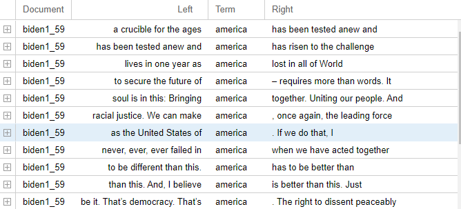

For my Corpus Analysis I have chosen to look between the inaugural addresses of
our very first and most recent presidents, George Washington and Joe Biden.

Throughout President Biden’s (top) Inaugural Address the most commonly used word is America.
When viewing President Washington’s (bottom) Inaugural Address the most common word used was “government”.
To a blind eye just seeing these two images it may be difficult to tell that these texts regard the same
topic while only viewing the most commonly used words. As you begin to dive deeper into the information
with the Voyant and AntConc softwares it becomes more clear as to what the texts are and show a much more
in depth view of the two addresses.
The two images that can be seen above are the results of the most common two word ngram
clusters found in Joe Biden (left) and George Washington’s (right) Inaugural Addresses.
In President Biden's Inaugural Address the most common two words together are “we can” used
a total of fifteen times together. The most commonly used two words together from President
Washington’s Inaugural Address is “of the” used a total of 20 times. From looking at these two
images it can be clearly seen that both sets of text are related in some sort of way as both show
one seeming to take responsibility for their country.
Between both of these texts the tone is quite the same as the inaugural address of President
Washington projects the hope of a new nation rising, President Biden’s projects the hope of
the same same nation rising again in the midst of a pandemic. President Washington’s address
is a very patriotic speech as President Biden’s is full of hope. Both Inaugural addresses show
the hope for the advancement of the United States under the watch of both presidents.